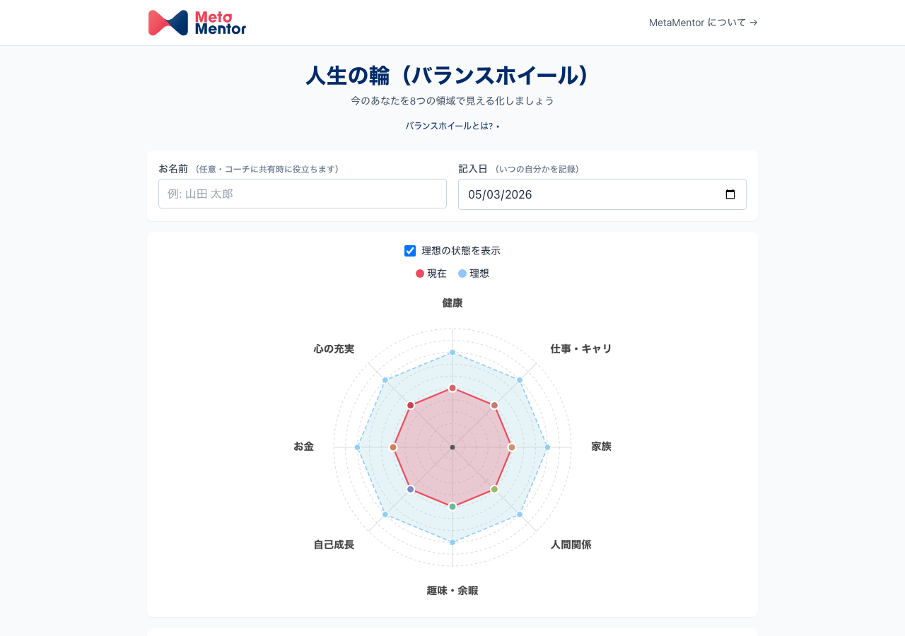
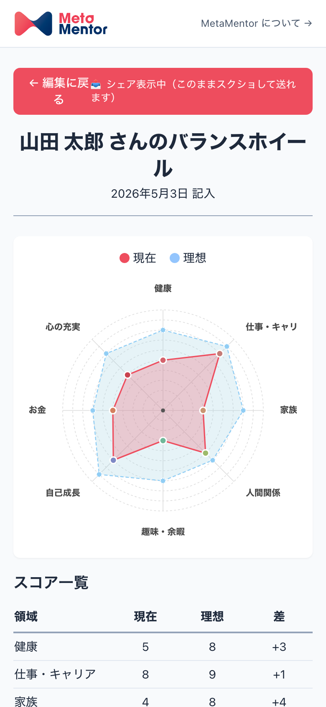

コーチがクライアントに渡せる無料の Web ツールと、
セッション現場で活かす実践ノウハウを1冊に。
アカウント登録不要・3分で完了。
クライアントが自宅で「人生の輪」を埋め、
コーチに送る ─ そのまま使える Web ツール。
本書の中核は、クライアントに URL を送るだけで使える無料の「人生の輪」ツールです。それを最大限に活かすための理論と実践ノウハウを、ICF認定PCCコーチの視点でまとめました。
すべての章はこのツールを前提に書かれています。下記URLを開き、まずコーチ自身が一度埋めてみてください。クライアント体験を理解した上で本書を読み進めると、各章の意図が立体的に伝わります。
クライアントに balance-wheel-tool.vercel.app を送るだけ。
アカウント登録不要、3分で完了、結果をスクショ/PDFでコーチに共有できる ─ それが本書の中核です。

このページを開きながら、balance-wheel-tool.vercel.app を別タブで開いて、ご自身のスコアを入れてみてください。3分で完了し、その体験が以降の章を読む解像度を大きく上げます。
なぜこのワークが60年使われ続けてきたのか。
クライアントを前に立つときの「自信」は、ツールの背後にある理論を理解しているかどうかで決まります。
人生を構成する複数の領域を円グラフで可視化し、それぞれの満足度を 0〜10 で点数化するツール。「人生の輪」「Wheel of Life」とも呼ばれます。
ICF認定スクールの多くで「初回セッション・標準ワーク」に組み込まれています。日本では2000年代以降、コーチング研修の入門ワークとして広く普及しました。
定番ワークは、しばしば「ありきたり」と軽視されがちです。しかしバランスホイールが60年以上使われ続けてきた事実は、このワークが満たす本質的な機能が他に代替されていないことを意味します。本書では、その「なぜ」を構造的に解き明かします。
人生の主要領域は、文化・年代・職業を超えてある程度共通している。そのため初回クライアントとの共通言語として機能します。
ルールは「8項目に 0〜10 を付ける」だけ。3分で完了するため、心理的ハードルが極めて低い。
スコアそのものより「なぜその数字を付けたか」「理想とのギャップ」を語ることで、深い対話の入り口になります。
1960年、米国テキサス州。モチベーション研究の第一人者 Paul J. Meyer（ポール・J・マイヤー）が Success Motivation Institute（SMI）を設立しました。
Meyer の思想は、ファイナンス・キャリア・身体・家族・精神性・教育・倫理という7領域を同時に診断するワークとして体系化されました。その視覚化ツールとして円形のホイール図が採用され、現代のバランスホイールの原型が完成します。
バランスホイールは、生活全領域を統合的に扱う Whole Life Coaching の中核ツールとして発展してきました。
作業療法・職業健康学の文脈で「生活領域のバランス度合いと主観的幸福感に正の相関」を実証しています。
Diener らの SWB 研究では「人生の各領域の満足度の総和」がウェルビーイングの指標とされています。バランスホイールはこのフレームをビジュアル化したものと捉えられます。
Deci & Ryan の SDT では「自律性 (Autonomy)」「有能感 (Competence)」「関係性 (Relatedness)」がウェルビーイングの基礎とされます。バランスホイールの「自分でスコアを付ける」プロセスは、自律性を直接強化する設計と言えます。
本ツールが採用する標準8項目には、長年のコーチング実践と生活満足度研究の蓄積が反映されています。
| # | 項目 | 主にカバーする領域 |
|---|---|---|
| 1 | 健康 | 身体・体力・睡眠 |
| 2 | 仕事・キャリア | 職業・職場・キャリア進展 |
| 3 | 家族 | 家族関係・パートナーシップ |
| 4 | 人間関係 | 友人・同僚・コミュニティ |
| 5 | 趣味・余暇 | リクリエーション・自己表現 |
| 6 | 自己成長 | 学び・スキル開発・知的好奇心 |
| 7 | お金 | 経済的安定・資産・収入 |
| 8 | 心の充実 | スピリチュアリティ・意味・幸福感 |
健康: 身体の声を聴いているか
仕事・キャリア: 自分のエネルギーを注ぐ場所として納得しているか
家族: 最も近い人々との関係に時間とエネルギーを割いているか
人間関係: 家族以外の社会的つながりを育てているか
趣味・余暇: 「やらねば」ではない「やりたい」時間を持てているか
自己成長: 1年前の自分から進化している実感があるか
お金: 安心と選択肢を生む経済基盤があるか
心の充実: 日常の中で「生きていてよかった」と感じる瞬間があるか
標準8項目は出発点に過ぎません。クライアントのフェーズや業界に応じて、項目の追加・置き換えを行うことで、ワークは何倍も深くなります。
① 加える項目は3つまで ─ 多すぎると焦点がぼやける
② クライアントが20秒以内で意味を理解できる項目名にする
③ 同じカテゴリの項目を2つ以上入れない（例: 「健康」と「フィットネス」を同時に置かない）
標準8項目に加えて:
重要: カスタマイズはクライアントと対話しながら一緒に決めるプロセス自体が、コーチングセッションの素材になります。
理論を腹落ちさせたら、次は手を動かす番です。
明日のセッションでそのまま使えるスクリプト・問いかけ・運用フローをまとめました。
ホワイトペーパーをダウンロードしてから、クライアントとの対話で活用するまでの流れを6ステップで整理します。
ブラウザのキャッシュ削除・シークレットモード・別端末では入力が引き継がれません。重要な記入は印刷/PDF保存を推奨します（ツール側に印刷ボタンを実装済）。
そのままコピペして使えるメッセージ・テンプレートを3シーン分用意しました。クライアントの関係性・場面に応じて選んでください。
場面別に、すぐ使える問いを15個まとめました。クライアントが入力した直後の対話で、これらの問いを1〜2個選んで投げるのが基本形です。
このホイール、全体の形を眺めてみてください。最初に何を感じましたか？
この点数の付け方、自分にとってどう感じましたか？ 思っていたより低い項目、高い項目はありましたか？
現在と理想の差が一番大きい項目はどれですか？ なぜその差があると感じますか？
現在のスコアが高い項目には、どんな工夫やリソースがありますか？ それを他の領域に活かせるとしたら？
もし1つだけ、3ヶ月で1点上げるとしたらどの項目ですか？ なぜそれを選びましたか？
2回目以降のセッションでは、変化と停滞の両方に光を当てる問いが効きます。
前回○月の記入と比べて、変化のあった項目はどれですか？ 何がその変化を生みましたか？
動いていない項目があるとしたら、それはなぜでしょう？ そこに触れたくない理由はありますか？
上がる時と下がる時で、何かパターンはありますか？ 季節・時期・状況など。
このスコアの付け方そのものが、前回と比べて変わったと感じますか？ もしそうなら、何が変わったのでしょう。
前回設定したアクションは、どの項目にどう影響しましたか？ 想定通り、想定外、両方ありますか？
契約期間の最後や、ある区切りを迎えるタイミングでは、変化を統合する問いが鍵になります。
最初の記入と今回の記入、形を見比べて何を感じますか？ ご自身にどんな変化が起きていますか？
この期間で、自分について新しく分かったことは何ですか？ それはこのホイールのどこに表れていますか？
変えたかったのに変わらなかった項目があるとしたら、今、その項目に対してどう感じますか？
次の3ヶ月、6ヶ月、1年で大切にしたい項目はどれですか？ それは今までと同じですか、変わりましたか？
自分を褒めたい項目はありますか？ そこに至るまで、どんな自分の選択があったでしょう。
バランスホイールは「1回きり」より「定点観測」で価値を最大化します。コーチングの効果測定にも直結します。
| 観察ポイント | コーチの問い |
|---|---|
| 全体の形の変化 | 「どんな違いを感じますか？」 |
| 上がった項目 | 「何がその変化を生んだと思いますか？」 |
| 下がった項目 | 「ここに触れたくない時期だったかもしれません。何があったでしょう？」 |
| 動かなかった項目 | 「変えたかったのに変わらなかった、という事実をどう感じますか？」 |
| 理想スコアの変化 | 「理想自体が変わった項目はありますか？ それは成長のサインかも」 |
クライアントが実際に触れる画面を、コーチも知っておく。
当日のセッションでスムーズに対話に入るための画面ガイドです。
クライアントがツールを開いてから完了するまでの5ステップ。3分で完了する設計です。
スマホでスクリーンショットを撮るとき、編集UIを隠して「結果だけ」をスマホ1画面に収めるモードです。
シェア表示中、または通常画面の「印刷 / PDF保存」ボタンから:
iPhone: 共有 → 「ファイルに保存」 → PDF が Files に保存
Android: プリンタ選択画面で「PDF として保存」

図2. シェア表示モード ─ 編集UIが隠れ、結果のみ表示
クライアントから受け取ったスコアを、コーチはどう「読む」か。3つのレンズを意識すると深まります。
スコアの数字だけで「だから○○すべき」とアドバイスすることは避けましょう。スコアは対話を始める入口であって、診断結果ではありません。
実務で使える補助資料一式。
テンプレ・ケーススタディ・倫理ガイド・印刷用ホイールなど、明日から現場で活きる資料を集めました。
Chapter 5 のスクリプトに加えて、特殊シーンで使えるテンプレを2種類掲載します。
「事前にやってきてください」より「もしお時間あれば」の方が完了率が高い、というコーチからの実感報告があります。やらされ感がない方が、当日のクライアントの体験も豊かになります。
仕事・キャリア: 9 / 理想 9 ／ 家族: 3 / 理想 8（差5）
健康: 4 / 理想 7 ／ 心の充実: 5 / 理想 8 ／ その他: 6前後
「仕事は理想とぴったり一致していますね。一方で家族との差5は何が表れているのでしょう？」
家族との時間を犠牲にして仕事を取ってきた。それが正解だと思っていたが、最近、息子と話す時間が減ったことに気付いた。
仕事スコアが「理想と完全一致」していた状態は、実は他領域を犠牲にした不健全な高得点だった可能性。「現在 = 理想」だからといって安心せず、その背景を問う必要があります。
全項目 4〜5 でほぼ均等
「全体的に同じくらいの点数ですね。これはご自身にとってどんな状態ですか？」
特に不満はないけど、特にワクワクすることもない。なんとなくの毎日が続いている。
「もし1つだけ点数を上げるとしたら、どの項目ですか？」
「逆に、何があれば点数を下げてもいいと思える項目はありますか？」
均等なスコアは「バランスが取れている」ではなく「情熱の対象が見つかっていない」サインだった。
「自己成長」を起点に、新しい学びを試行錯誤する3ヶ月に。
9月時点で自己成長 7、心の充実 6 へ上昇。
均等な4-5は要注意シグナル。「平和」と「停滞」は紙一重。バランスではなく「躍動感のなさ」を見抜く視点も持っておきたい。
自己成長: 9 / 理想 10 ／ 仕事・キャリア: 8 / 理想 10
健康: 3 / 理想 7 ／ 趣味・余暇: 2 / 理想 6 ／ 家族: 5 / 理想 5
「自己成長と仕事、すごく頑張っていますね。一方で健康と趣味の理想とのギャップが目立ちます。これはどんな状態ですか？」
成長したい一心で、休まず動いている。最近、朝起きるのがしんどい。
燃え尽きの初期サイン。「成長を諦めて休め」ではなく、「持続可能な成長にはどんな条件が必要か」を一緒に探る対話へ。
高スコア項目に「がんばり屋ゆえの危うさ」が隠れていることがある。「9点以上」が必ずしも健全ではないことを、低い項目と組み合わせて読むことで見えてくる。
優れたツールほど、使うべきでない場面を見極める力が問われます。誠実なコーチであるために、本ツールの限界も併せて知っておきましょう。
うつ・喪失・トラウマ反応の急性期では、数値化が「自分のダメさ」を強調する作用を持ちうる。
「点数を付けるのが嫌い」「自分を測られている感じがする」と感じる方には、別のワーク（バリューカード、未来手紙等）を選ぶ。
「とりあえず埋めて」では入力するだけで対話に繋がらず、クライアントが「やらされ感」だけを持ち帰るリスク。
「ここが低いですね、どうしましょう？」というアプローチは、クライアントの自己決定を奪う。
① 入力は強制せず、断られたら別の方法を提案
② スコアは「診断」ではなく「対話の入口」と明確に伝える
③ コーチが解釈を押し付けず、クライアントの言葉を待つ
④ メモ欄やセッション中の発言の方が、スコア数字より雄弁
バランスホイールが特に支える ICF コア・コンピテンシー（2024年版）を整理しました。資格更新時の振り返りや、自己評価の参照にご活用ください。
| ICF コンピテンシー | バランスホイールでの実現方法 |
|---|---|
| 3. 合意の確立と維持 | 8項目から「今回扱いたいテーマ」をクライアント主導で選ぶ |
| 5. 在り方の体現 | スコアを評価せず、好奇心と無条件の肯定で受け取る |
| 6. アクティブリスニング | スコア数字より「なぜそう感じたか」の語りに耳を傾ける |
| 7. 気づきの喚起 | 「思っていたより低い/高い」項目への問いで、自己認識を深める |
| 8. クライアントの成長を促進 | 3ヶ月ごとの再記入で、変化と学びをクライアント自身が言語化 |
スコアの数字の背後にある感情・出来事・パターンに焦点を当てる。「なぜ4と感じたのか」を問うことで、表層的な評価を超えた対話が始まる。
再記入セッションで、前回からの変化を統合的に振り返る。「変化のプロセスから何を学んだか」「次にどう活かすか」を問う。
デジタルが苦手なクライアント、または対面セッションで使う用に、印刷可能な空白ホイールを用意しました。このページを A4 で印刷してご利用ください。
中心が 0、外周が 10。同心円のスケール幅は 2 ずつ。
本書で紹介したバランスホイールツール以外にも、コーチの「現場をもっと楽に」を支える無料サービスを揃えています。
日本初のコーチングCRM × AI。セッション音声をアップするだけで、AIが文字起こし・要約・ICFのPCCマーカー分析まで自動化。記録の手間から解放され、AIフィードバックで上達も加速。
▸ metamentor.tech/product/crm/予約管理・Zoom URL自動発行・カレンダー連携・セッション記録までワンストップ。複数ツールを行き来する手作業から解放され、本業のコーチングに集中できる毎日へ。
▸ metamentor.tech/product/sm/クライアントの「今の状態」と「セッション前後の変化」を5分で可視化。早稲田大学・大月友教授（臨床心理士）監修の25因子診断で、コーチング効果を客観データとして示せる。
▸ wellbeing.metamentor.tech| 会社名 | 株式会社メタメンター（MetaMentor, Inc.） |
| 設立 | 2022年6月10日 |
| 事業 | コーチング・ウェルビーイング・事業承継のDX |
| 配布ツール | balance-wheel-tool.vercel.app |
| 問い合わせ・バグ報告 | metamentor.tech/#contact |
| 初版発行 | 2026年5月 |
本書の内容は、対人支援の専門家による実践と、関連する学術研究を踏まえて編纂されています。クライアントとの実践においては、本書の内容を参考にしつつ、最終的な判断はコーチご自身の専門性と倫理規定に基づいてください。